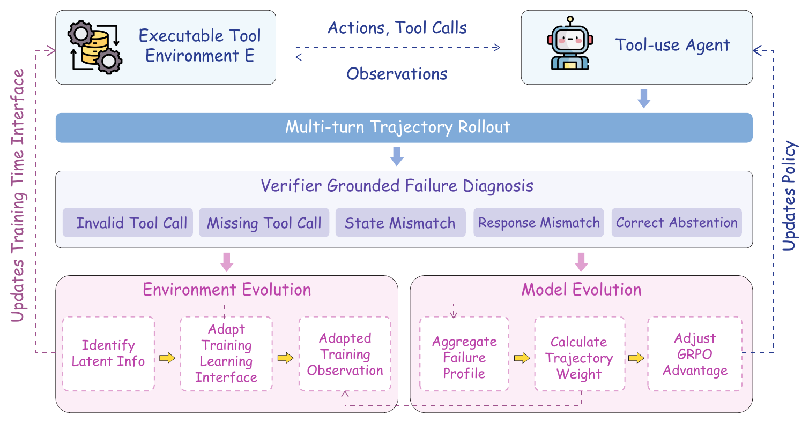

01研究背景与问题定义
工具代理失败时，一个零奖励无法说明是漏调用、参数类型错误、状态先决条件缺失，还是最后答复不合要求。继续在同样模糊的环境反馈下强化训练，会反复遇到相同问题。只改策略或只增加任务难度，都可能没有改善真正阻塞学习的接口。
SEAL 以 verifier-grounded diagnosis 把当前策略的可执行失败转换成结构化信号，一路用于训练时提示与恢复反馈，另一路调节已有优势的更新强度。“环境演化”在此特指学习接口变化；工具后端、任务标签和最终验证器保持不变，评估时还会移除增强接口。
| 可改变 | 保持固定 | 为什么必须分开 |
|---|---|---|
| schema 提示、约束说明、恢复指导 | 工具签名、语义与原始输出 | 避免把任务改简单冒充能力提升 |
| 诊断驱动的训练权重 | 二元终局奖励与成功标准 | 失败不能靠重标变成成功 |
| 依据近期失败画像选择提示 | 测试协议 | 验证能力是否能脱离训练脚手架 |
02方法与技术路线
同一失败画像控制环境接口和模型优化，两条路径以可执行证据相连。诊断器是规则分类器，提示增补也按失败类型选择，并非让一个 LLM 自由改写评测环境。
On-policy 交互
当前策略在当前训练接口中运行，保留解析、参数、执行错误和可观察状态转移。
Turn-level Diagnosis
得到每轮失败标签与近期聚合画像；原本失败轨迹仍是零奖励。
接口路径
按错误类型增加工具 affordance、schema 约束或恢复提示；影响后续训练 rollout。
优化路径
失败标签形成有界正权重 w；将原 GRPO 优势 A 变为 wA，保留符号。
诊断如何落到真正可执行的错误
分类器读取动作、解析检查、schema、错误和可用的前后状态，优先标记直接可核查的执行失败，再标记下游验证问题。这样可以把参数不匹配、缺调用、恢复失败与答复失配区别开，而不依赖一段无法核对的自由反思。
诊断精度受环境可观察性约束。若接口只返回统一异常而没有状态信息，规则无法凭空识别因果。SEAL 的适用前提是训练环境能暴露足够结构化证据；它不是把任意黑盒工具自动变成有完整诊断的环境。
学习接口怎样帮助下一次轨迹
schema 提示说明类型、必填项、枚举或有效调用格式；恢复反馈把错误转成可操作的修复方向；能力提示按近期失败画像选择。它们澄清已有信息，不暴露标准调用序列、隐藏参数或最终答案。
关键是提示针对错误类别，而非逐题补答案，且后端不变。评估移除提示，检验模型是否内化了约束与恢复能力；否则结果可能只说明增强接口更易使用。
优势重加权没有改变成功标准
每条轨迹将逐轮标签汇成诊断分布，再按固定 utility 权重和裁剪界得到正值 w。具体可归因、可修复的失败比模糊答复错误获得更强更新权重，最终使用 wA。
由于 w 为正，优势的正负不变：诊断改变更新压力，不把失败奖励改为成功，也不倒转 verifier 给出的方向。这个区别使它更接近梯度预条件，而非另一套手工奖励模型；不过哪些错误更值得优化，仍是研究者写入的归纳偏置。
论文原始结构图 · 点击对照

03实验设计与结果分析
同样 400 条样本下，诊断是否超出普通 RL
| 配置 | 平均分 |
|---|---|
| 原始模型 | 14.0 |
| Vanilla RL | 30.75 |
| 无环境侧适应 | 35.75 |
| 无诊断重加权 | 32.75 |
| 无闭环更新 | 33.0 |
| 完整 SEAL | 40.25 |
完整方法比相同数据、rollout、优化器族与奖励的 Vanilla RL 提高 9.50 个百分点，说明收益不只是“训练过”。移除重加权的损失比移除接口适应更大，但完整方法仍优于两条单侧路径，支持共同诊断信号的互补价值。
Qwen2.5-7B 的 Missing Functions 与 Missing Parameters 分别从原始 14% / 10% 提高到 36% / 34%，与方法目标相符；但对照普通 RL 时，净改善较小，应避免把相对原始模型的全部差值归给 SEAL 独有组件。
离开训练接口后，迁移达到什么程度
| 基准 | 原始 → SEAL |
|---|---|
| BFCL V4 | 4.69% → 8.63% |
| τ²-bench | 9.64% → 11.76% |
迁移为正，支持学到部分可复用工具约束；但绝对成功率仍低，说明修复形式与局部恢复并未解决复杂业务中的全部规划与状态推理。正向迁移不应写成已经获得稳健通用工具能力。
04贡献、局限与综合评价
让环境帮助学习，同时约束它不能改变答案
SEAL 的贡献在于定义清晰的可变层：学习接口与梯度压力一起跟随当前失败，但执行语义和奖励保持固定。这避免了把环境共同演化写成任意改变任务，也使收益更容易被审计。
移除训练脚手架是必要验证，却不是充分验证
评估时撤掉增强接口，能排除“模型只是一直靠额外提示做题”的直接解释。但 schema 规律也可能在相近基准间重复，模型学到的可能主要是常见格式纠错，而不是对新工具状态的抽象恢复。分布外结果为正但绝对值有限，与这种较窄解释仍相容。若在名称、参数表面和反馈格式改变但执行逻辑相同的新工具上维持收益，才更支持内化了恢复原则；反之，应把方法价值定位于改善有限样本下的接口学习效率。
可诊断性偏置可能塑造学习盲区
高 utility 分配给容易执行核查的错误，会把学习资源偏向类型、参数和局部修复。那些只能从终局发现的规划错误可能反而获得更弱权重。主实验改善集中于结构化失败，与这一设计一致，却也提示系统可能优先修复“容易描述的失败”。
可进一步固定训练成功率和数据量，分别测可局部诊断与只能延迟判定的故障，并跟踪移除接口后的恢复策略。若后者进步明显较少，重加权需要随学习阶段调整，而不能一直把可诊断性当长期价值。现有证据支持小样本工具学习中的有效训练脚手架，尚不足以说明通用任务环境都适合相同诊断权重。